→
AUTUMN 2023
Data visualisation
in collaboration with ETH Crowther Lab & Focus
Terra
Groupwork By
Tara, Anja, cyril, Stephan
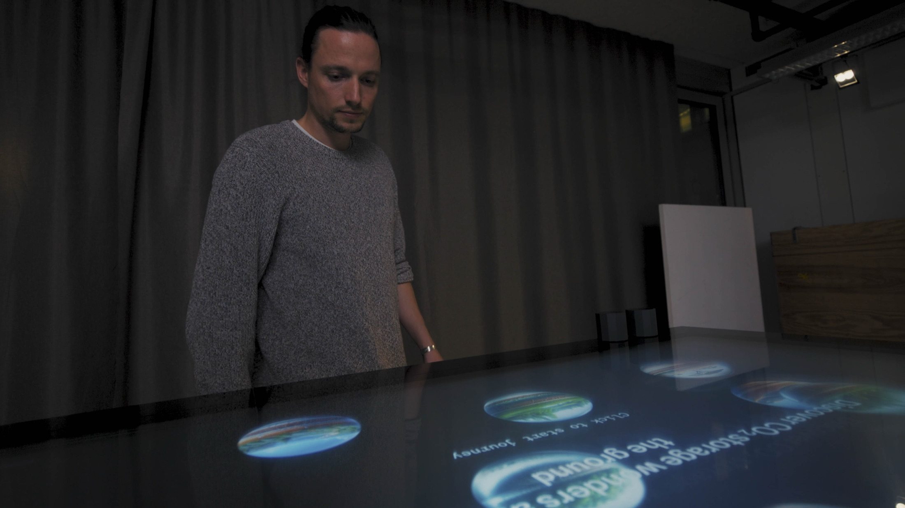
Concept
We worked together with ETH Crowther Lab and Focus Terra to create an interactive table that shows how carbon can be stored both in the ground and in nature above it. It’s part of an exhibition where visitors can explore nature-based solutions for CO₂ storage and get a better grasp of global climate data. The goal is to help young people understand climate change and feel inspired to take an interest in it.
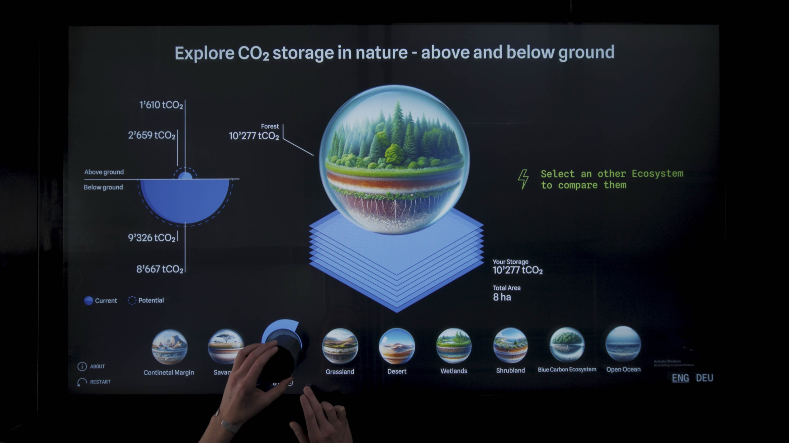
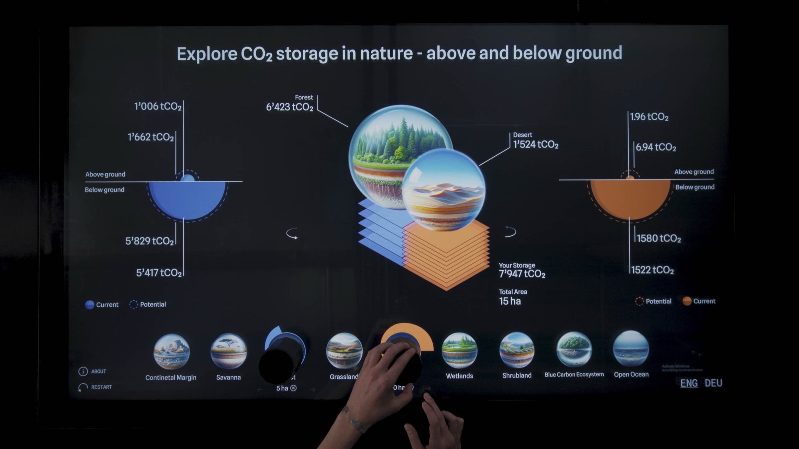
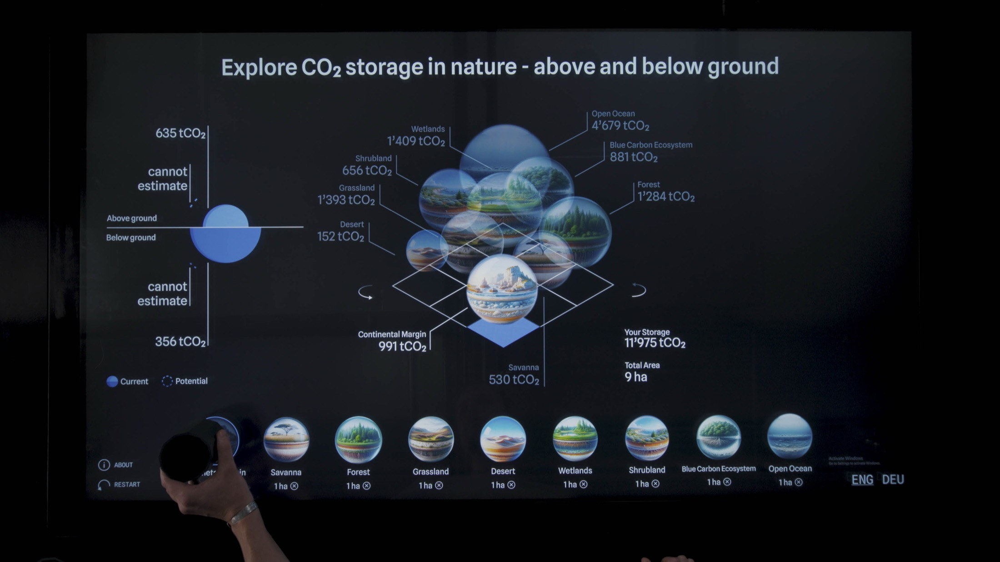
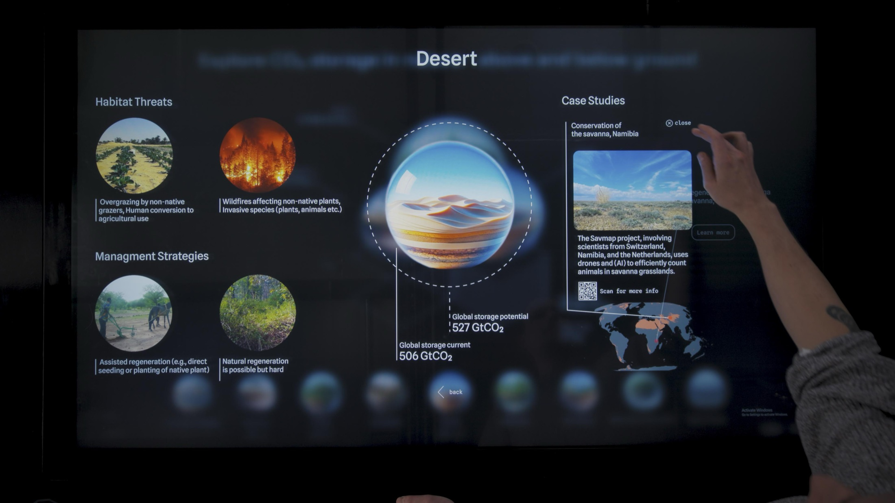

process
The process started with us getting familiar with the data from the research lab. To create a
meaningful solution, we first needed to understand the different datasets as well as the goal and
motivation behind the upcoming science exhibition.
From there, we moved into the design
phase by doing rapid sketching. We then clustered and combined similar concepts, which formed the
foundation for our entire design process. Through quick prototyping we aimed to test our quick ideas
and focused then on iterations.
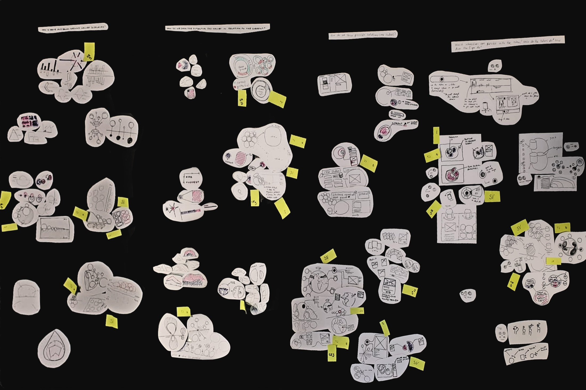
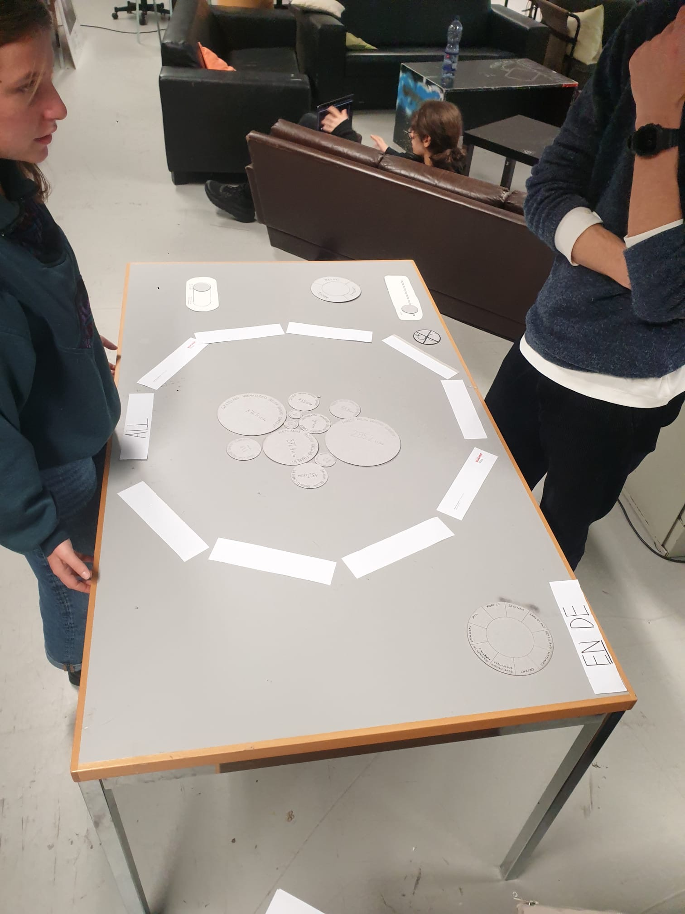
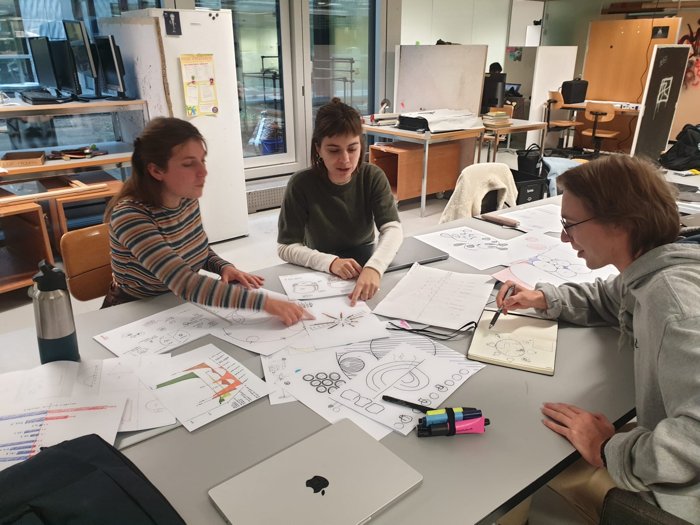
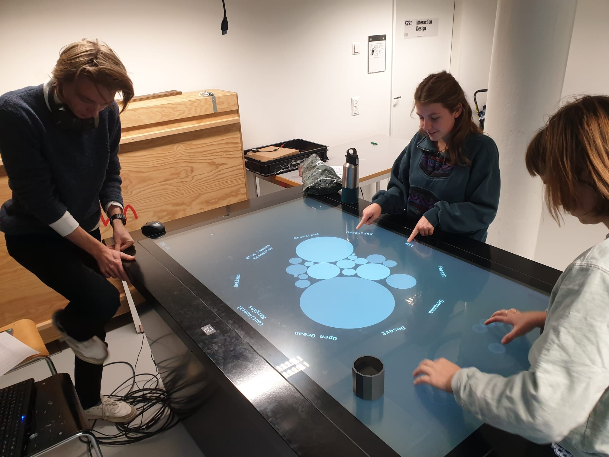
We focussed on making the overall experience more playful and on developing a key message for every screen. Moreover, we switched from a 2D visualization to 3D spheres, to better display volumetric CO2 data and its according area . With this iteration, we set an accent on simplifying the visualized data i.e. on making it possible to adjust the normalised values to m2, a, ha and km2.
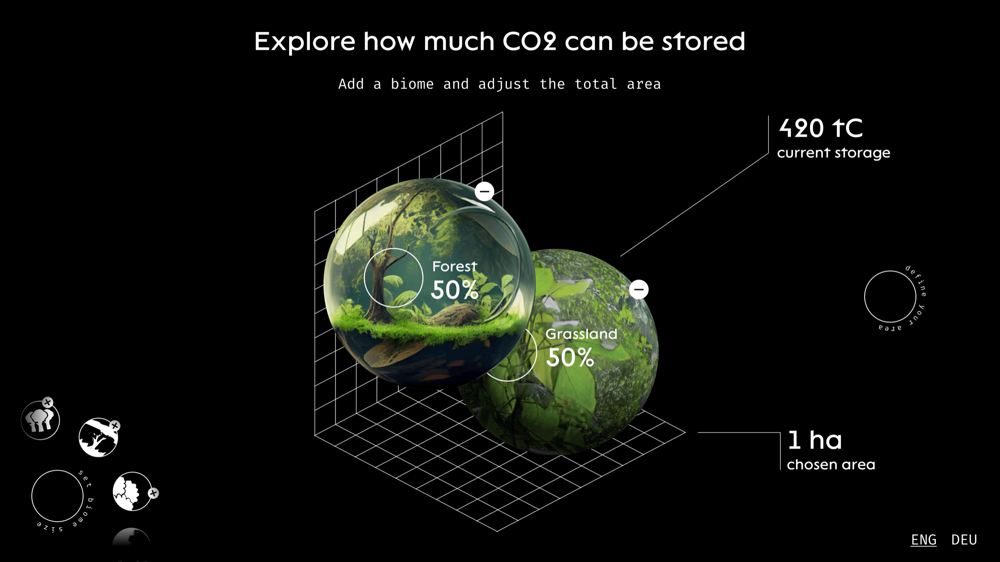
While refining the UX, we focused heavily on visuals. We used GPT-4 to create glass-like 3D bubbles representing ecosystems and added a slow floating animation to invite interaction. Based on user testings, we improved the typeface for accessibility, adjusted color coding to distinguish text types, and added custom animated icons to highlight key interactions and explanations.


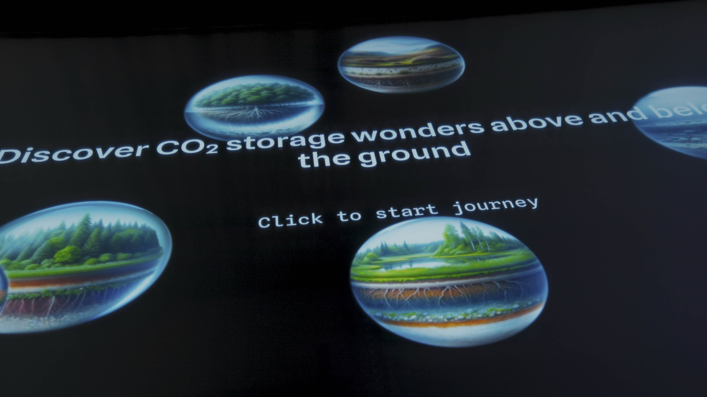